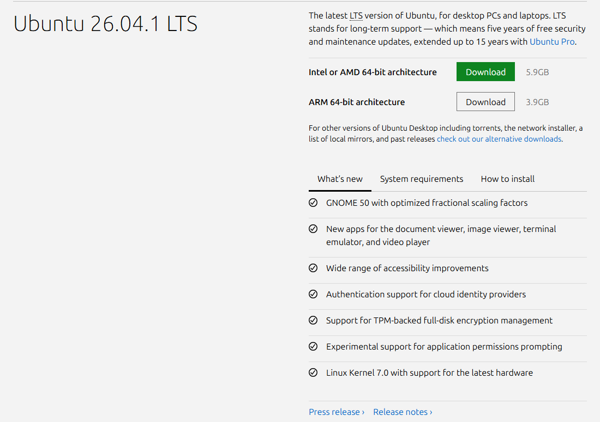

Versiones, sabores y requisitos
Qué significa 26.04 LTS, cuánto dura el soporte, qué sabores existen y qué ordenador necesitas.
Versiones, sabores y requisitos
🗓️ Cómo se numeran las versiones
Los números de Ubuntu son una fecha: año.mes de lanzamiento. Por eso 26.04 significa abril de 2026. Cada versión tiene también un nombre en clave formado por un adjetivo y un animal: la 26.04 es «Resolute Raccoon» (mapache resuelto). Se publicó el 23 de abril de 2026, y la revisión 26.04.1 es la que hoy ofrece la web de descarga.
LTS frente a versiones intermedias
| LTS (soporte a largo plazo) | Intermedia | |
|---|---|---|
| Cuándo sale | Cada dos años, en abril (como la 24.04 y la 26.04) | Cada seis meses (como la 25.10) |
| Soporte | 5 años de actualizaciones de seguridad gratuitas (la 26.04 hasta abril de 2031) | Mucho más corto: hay que actualizar a la siguiente |
| Para quién | La mayoría de personas y centros: estable y duradera | Quien quiere lo último cada seis meses |
Para el aula y para tu casa, la recomendación general es usar siempre una versión LTS: cambias de versión solo cada dos años y tienes cinco de tranquilidad.
Introducing Ubuntu 26.04 LTS | Resolute Raccoon · canal oficial Canonical Ubuntu en YouTube
Presentación oficial de la versión de este curso (1 min). Está en inglés; puedes activar los subtítulos de YouTube.
Los sabores oficiales de Ubuntu
Además de Ubuntu «a secas» existen sabores oficiales: mismo sistema base y mismo repositorio de software, pero con otro escritorio o con un objetivo concreto.
| Sabor | Para qué |
|---|---|
| Kubuntu | Escritorio KDE Plasma, muy personalizable |
| Xubuntu y Lubuntu | Escritorios ligeros: ideales para ordenadores antiguos o con poca memoria (desde 2 GB de RAM) |
| Ubuntu Budgie, Ubuntu Cinnamon, Ubuntu Unity | Otros escritorios, con aspecto más clásico o diferente |
| Ubuntu Studio | Creación de audio, vídeo y gráficos |
| Edubuntu | Educación |
| Ubuntu Kylin | Versión para usuarios de habla china |
Requisitos de Ubuntu Desktop 26.04 LTS
| Componente | Mínimo para una experiencia cómoda |
|---|---|
| Procesador | 2 GHz de doble núcleo o mejor |
| Memoria RAM | 6 GB |
| Disco | 25 GB libres |
| Instalación | Un puerto USB o unidad de DVD para el instalador |
| Internet | Recomendable para actualizaciones y programas, pero no obligatorio para la instalación inicial |
🧪 ¿Cumple mi ordenador los requisitos?
Escribe los datos de tu equipo (los encuentras en la configuración de Windows, en «Acerca de») y comprueba si encaja con Ubuntu Desktop 26.04 LTS.
Descargar Ubuntu
La descarga oficial es siempre desde ubuntu.com/download/desktop. La imagen (archivo ISO) pesa unos 5,9 GB para ordenadores Intel/AMD de 64 bits y 3,9 GB para ARM de 64 bits.

Captura realPágina oficial de descarga de Ubuntu Desktop. Fuente: ubuntu.com/download/desktop (6 de octubre de 2026). El aspecto puede cambiar con el tiempo.
🧩 Leer una versión
¿Qué significa el número 26.04?
🧩 Elegir versión
Montas un aula con 15 equipos y quieres cambiar de versión lo menos posible. ¿Cuál eliges?
🧩 Equipo antiguo
Un ordenador de 2 GB de RAM no cumple los requisitos de Ubuntu Desktop. ¿Qué alternativa sugiere Canonical?